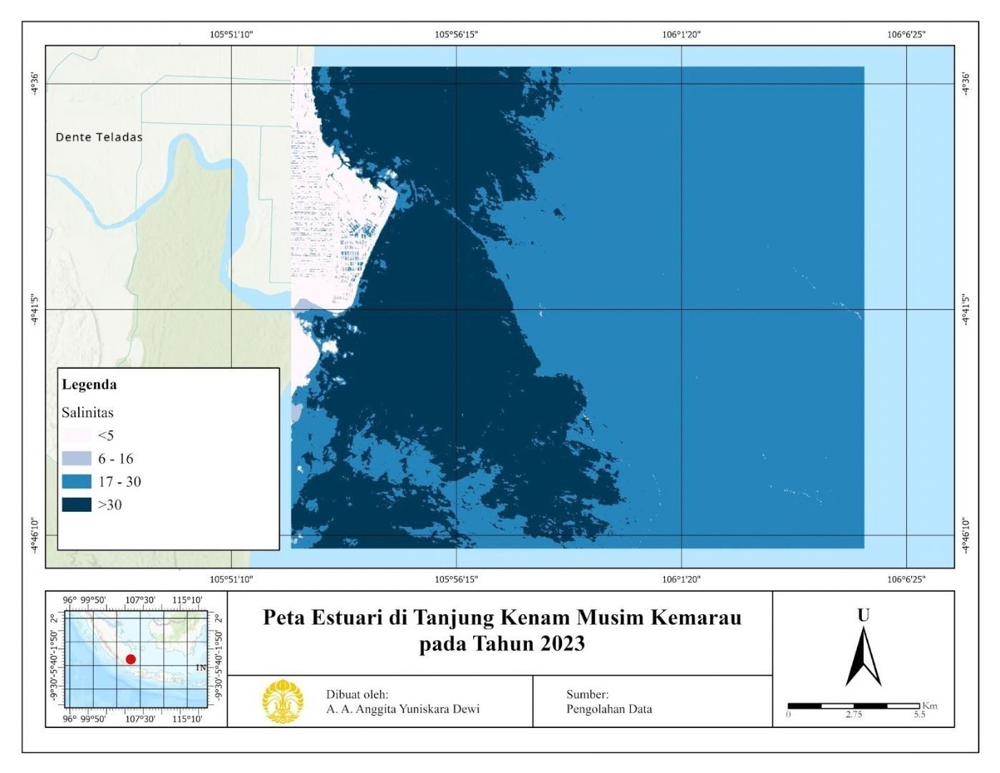
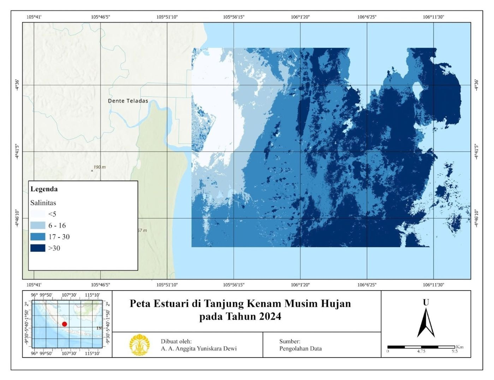
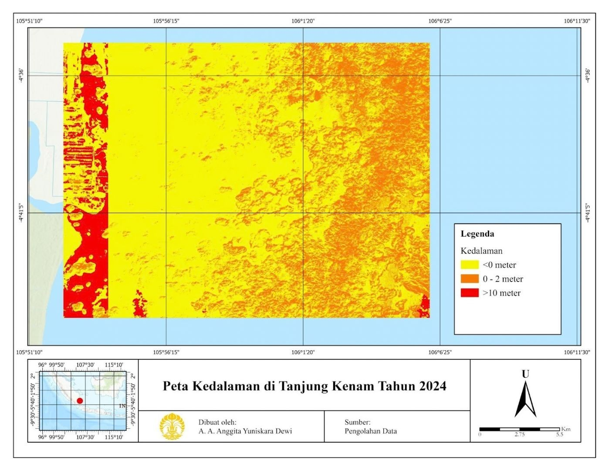

Analisis Salinitas Estuari Tanjung Kenam, Kabupaten Pesawaran, Lampung Menggunakan Citra Landsat 8
Latar belakang
Salinitas, yaitu kadar garam di perairan, menentukan siapa yang bisa hidup di suatu perairan pesisir, mulai dari mangrove dan lamun hingga ikan dan udang budidaya. Kadar garam ini tidak tetap. Ia naik saat penguapan tinggi dan aliran air tawar berkurang, lalu turun saat hujan dan aliran sungai meningkat. Karena itu, salinitas di pesisir selalu berubah mengikuti musim.
Tanjung Kenam, di pesisir barat daya Kabupaten Pesawaran, Lampung, adalah tempat yang tepat untuk melihat perubahan itu. Wilayah ini berhadapan langsung dengan Teluk Lampung, dikelilingi laut dan pulau-pulau kecil, serta menerima aliran dari beberapa sungai di sekitarnya, sehingga pengaruh laut dan darat bertemu di sini. Proyek ini memetakan sebaran salinitas di Tanjung Kenam pada musim hujan dan kemarau, membandingkan luas tiap kelas salinitas di antara keduanya, lalu menafsirkan dampaknya bagi ekosistem dan masyarakat pesisir.
Data yang digunakan
| Data | Format Data | Jenis Data | Sumber |
|---|---|---|---|
| Citra Landsat 8, musim kemarau (Juli – Agustus 2023) | Raster | Sekunder | Google Earth Engine |
| Citra Landsat 8, musim hujan (Januari – Februari 2024) | Raster | Sekunder | Google Earth Engine |
| Basemap Wilayah Kajian | Basemap | Sekunder | ArcGIS |
Metode
Untuk membandingkan dua musim, pengolahan dilakukan dengan cara yang sama pada citra kemarau dan citra hujan, di Google Earth Engine (GEE) dan ArcGIS Pro. Tahapannya:
- Memanggil citra Landsat 8 untuk tiap musim di GEE.
- Menghitung salinitas dari citra, lalu melakukan kalibrasi.
- Mengklasifikasikan hasilnya menjadi empat kelas, yaitu tawar (kurang dari 5 ppt), payau (5–16 ppt), sangat payau (16–30 ppt), dan asin (lebih dari 30 ppt).
- Menyusun simbologi di ArcGIS Pro untuk menampilkan sebaran kelas, lalu menghitung luas tiap kelas dan membandingkannya antarmusim.
Hasil
Temuan utamanya adalah hampir seluruh perairan Tanjung Kenam berkelas sangat payau di kedua musim, sehingga perbedaan antarmusim muncul pada kelas-kelas di kedua ujungnya. Pada musim kemarau, kelas asin masih ada sekitar 1.044 Ha, tetapi pada musim hujan hampir hilang. Sebaliknya, kelas tawar dan payau, yang pada musim kemarau nyaris tidak ada, melebar pada musim hujan.
| Kelas Salinitas | Musim Kemarau (Ha) | Musim Hujan (Ha) | Perubahan (Ha) |
|---|---|---|---|
| Tawar (< 5 ppt) | 13,2 | 2.370 | +2.356,8 |
| Payau (5–16 ppt) | 146 | 484 | +338 |
| Sangat payau (16–30 ppt) | 46.973 | 45.310 | −1.663 |
| Asin (> 30 ppt) | 1.044 | 12,2 | −1.031,8 |
Angka tersebut menunjukkan dua hal. Pertama, kelas sangat payau menempati sekitar 97% luas kajian pada musim kemarau dan sekitar 94% pada musim hujan, sehingga ia menjadi "latar" salinitas Tanjung Kenam sepanjang tahun. Kedua, perubahan musiman terjadi di pinggirannya: kelas asin menyusut sekitar 99%, dari 1.044 Ha menjadi 12,2 Ha, sedangkan kelas tawar dan payau digabung melebar dari sekitar 159 Ha menjadi sekitar 2.854 Ha, kira-kira 18 kali lipat. Pola ini sesuai dengan kondisi musim. Penguapan yang meningkat dan aliran air tawar yang berkurang menaikkan salinitas pada musim kemarau, sedangkan aliran sungai, limpasan, dan hujan langsung di laut mengencerkan air pada musim hujan.


Perubahan di pinggiran ini menjadi penting karena kondisi wilayahnya. Peta kedalaman memperlihatkan Tanjung Kenam didominasi elevasi kurang dari 0 hingga 2 meter di atas permukaan laut, yaitu dataran sangat rendah di sekitar pantai. Dataran serendah ini sangat peka. Sedikit pergeseran salinitas sudah dapat menjangkau perairan dan lahan di sekitarnya.

Dampak
Dengan wilayah yang serendah itu, pergeseran salinitas antarmusim berpotensi memengaruhi ekosistem pesisir dan aktivitas masyarakat. Dampaknya berbeda pada tiap musim, karena yang berubah adalah kondisi yang berlawanan:
| Aspek | Musim kemarau (salinitas tinggi) | Musim hujan (salinitas rendah) |
|---|---|---|
| Ekosistem pesisir | Biota yang sensitif terhadap garam tertekan; mangrove dan lamun dapat mengalami stres jika kondisi ini berlangsung lama. | Sedimen dan nutrien dari sungai meningkat; biota air laut yang tidak toleran air tawar dapat bergeser menjauhi muara. |
| Perikanan dan budidaya | Spesies air payau perlu penyesuaian kadar garam; hasil tambak dapat menurun jika salinitas melewati batas toleransi. | Salinitas yang turun mendadak dapat memicu stres pada ikan dan udang budidaya. |
| Air tanah dan lahan | Risiko intrusi air asin ke akuifer dangkal meningkat, terutama di lahan rendah dekat pantai, sehingga air sumur bisa terasa payau. | Pasokan air tawar membantu menekan intrusi, tetapi limpasan dan sedimen dapat memicu genangan di dataran rendah. |
| Kualitas air | Air lebih jernih, tetapi kadar garam tinggi membatasi pemanfaatan untuk kebutuhan sehari-hari. | Kekeruhan meningkat akibat sedimen dan limpasan permukaan. |
Karena salinitas berganti mengikuti musim, pengelolaannya pun perlu adaptif. Pembudidaya perlu menyesuaikan jenis komoditas dan jadwal tebar dengan kondisi musim, sedangkan pemerintah dan masyarakat perlu memantau kualitas air tanah serta menjaga mangrove sebagai penahan intrusi dan sedimen. Analisis ini bersifat indikatif, dan dampak sebenarnya perlu diverifikasi melalui pengukuran salinitas lapangan serta survei kondisi air sumur dan budidaya setempat.
Kesimpulan
Salinitas di Tanjung Kenam berubah nyata antarmusim. Perairannya tetap didominasi kelas sangat payau sepanjang tahun, tetapi kelas asin mengecil saat hujan dan kelas tawar serta payau melebar. Perbedaan curah hujan, penguapan, dan aliran air tawar menjadi faktor utama yang membentuk pola ini. Karena wilayahnya berupa dataran sangat rendah, pergeseran tersebut berpotensi memengaruhi ekosistem mangrove dan lamun, produktivitas budidaya yang peka terhadap kadar garam, serta kualitas air tanah yang rawan intrusi air asin saat kemarau. Pengelolaan pesisir ini karena itu perlu menyesuaikan diri dengan musim, misalnya lewat penyesuaian jadwal dan komoditas budidaya, pemantauan air sumur, dan perlindungan mangrove.
← View other projects